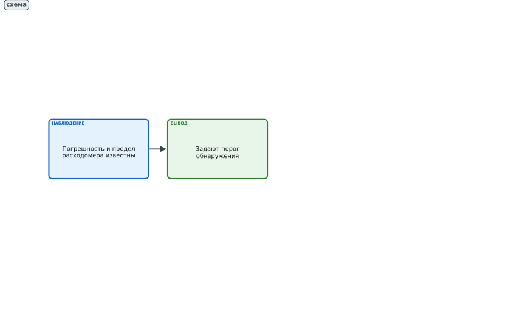
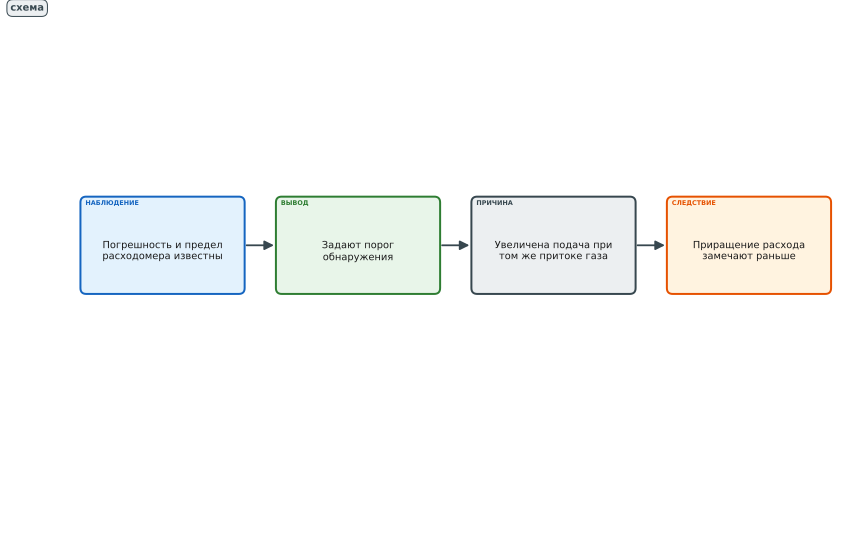
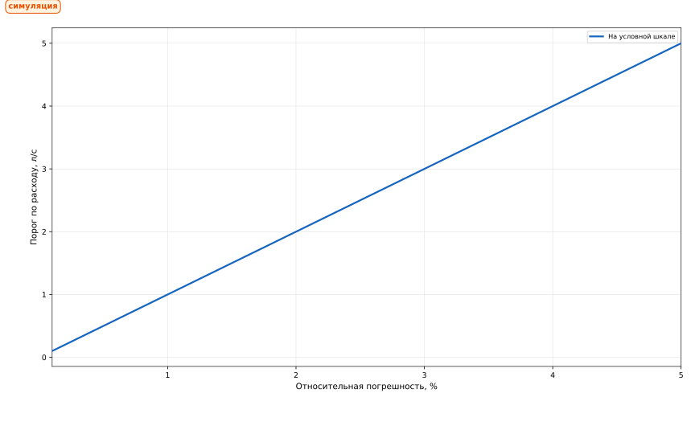

Стр. 234 · 4.1.1. ПРИЗНАКИ ПРОЯВЛЕНИЙ
Условие обнаружения проявления с помощью расходомера может быть записано в виде
Признаки проявлений; ликвидация нефтегазопроявлений при бурении скважинШаг 6 из 26
В книге: «Чувствительность расходомера и подача насосов» стр. 234–235
Опирается на: шаг 5 «Зачем сверять расход с уровнем» (предпосылка)
Подача насосов — расход поступающего раствора.
От нее зависит, как рано можно увидеть один и тот же приток газа.
Пороговая идея. Отличить предел прибора от зависимости сигнала от режима циркуляции. модель






Что ограничивает обнаружение малого сигнала?
Допущения: Условная схема; блоки не задают временной масштаб или размеры оборудования.; Для масштаба демонстрации взят условный максимальный расход 100 л/с; это не прибор со скважины..
Автор приводит условие обнаружения по расходомеру. Погрешность в формуле выражена в процентах. стр. 234
«Условие обнаружения проявления с помощью расходомера может быть записано в виде»
«относительная приведенная погрешность прибора, %;»
Верхний предел прибора выражен в л/с. При одинаковом притоке газа большая подача позволяет раньше обнаружить проявление. Сравнивают два приращения расхода в один момент при двух подачах. стр. 235
«максимальный расход раствора, измеряемый прибором, л/с.»
«С увеличением подачи время обнаружения проявления при одном и том же притоке газа в скважину сокращается в соответствии с равенством»
«приращение расхода на выходе в некоторый момент соответственно при первой и второй подаче насоса, превышающей первую в $n$ раз.»
Порог обнаружения по разности расходов стр. 234
| Обозначение | Что это | Единицы |
|---|---|---|
| $\Delta Q_{\min}$ | минимальная разность расходов | л/с |
| $\delta$ | относительная приведенная погрешность | % |
| $Q_{\max}$ | верхний предел измерения | л/с |
Сравнение прироста расхода при разных подачах стр. 235
| Обозначение | Что это | Единицы |
|---|---|---|
| $\Delta Q_1$ | приращение при первой подаче | — |
| $\Delta Q_2$ | приращение при второй подаче | — |
| $n$ | отношение второй подачи к первой | — |
Отличить предел прибора от зависимости сигнала от режима циркуляции.
Проверка контекста события в журнале перед интерпретацией метрики.
Где аналогия перестаёт работать: События в стволе физические, а показания могут запаздывать.
За рабочими решениями обращаются к действующему регламенту и ответственному специалисту; этот узел объясняет учебный пример.
События в стволе физические, а показания могут запаздывать.
Верный ответ: Проявление можно заметить раньше
При одинаковом притоке газа большая подача позволяет раньше обнаружить проявление. Где это в тексте (стр. 235) →
Верный ответ: Максимальный измеряемый расход; Относительная приведенная погрешность
Верхний предел прибора выражен в л/с. Где это в тексте (стр. 234) →
Все утверждения шага с дословной цитатой автора и страницей книги (по PDF).
Автор приводит условие обнаружения по расходомеру. наблюдение
«Условие обнаружения проявления с помощью расходомера может быть записано в виде»
Погрешность в формуле выражена в процентах. наблюдение
«относительная приведенная погрешность прибора, %;»
Верхний предел прибора выражен в л/с. наблюдение
«максимальный расход раствора, измеряемый прибором, л/с.»
При одинаковом притоке газа большая подача позволяет раньше обнаружить проявление. наблюдение
«С увеличением подачи время обнаружения проявления при одном и том же притоке газа в скважину сокращается в соответствии с равенством»
Сравнивают два приращения расхода в один момент при двух подачах. наблюдение
«приращение расхода на выходе в некоторый момент соответственно при первой и второй подаче насоса, превышающей первую в $n$ раз.»
Стр. 234 · 4.1.1. ПРИЗНАКИ ПРОЯВЛЕНИЙ
Условие обнаружения проявления с помощью расходомера может быть записано в виде
Стр. 234 · 4.1.1. ПРИЗНАКИ ПРОЯВЛЕНИЙ
$$ \Delta Q_{\min} = \delta Q_{\max} / 100, $$
Стр. 234 · 4.1.1. ПРИЗНАКИ ПРОЯВЛЕНИЙ
где $\delta$ — относительная приведенная погрешность прибора, %;
Стр. 235 · 4.1.1. ПРИЗНАКИ ПРОЯВЛЕНИЙ
$Q_{\max}$ — максимальный расход раствора, измеряемый прибором, л/с.
Стр. 235 · 4.1.1. ПРИЗНАКИ ПРОЯВЛЕНИЙ
Эффективность обнаружения газопроявлений расходомером существенно зависит от подачи насосов. С увеличением подачи время обнаружения проявления при одном и том же притоке газа в скважину сокращается в соответствии с равенством
Стр. 235 · 4.1.1. ПРИЗНАКИ ПРОЯВЛЕНИЙ
$$\Delta Q_2 = n \Delta Q_1,$$
Стр. 235 · 4.1.1. ПРИЗНАКИ ПРОЯВЛЕНИЙ
где $\Delta Q_1, \Delta Q_2$ — приращение расхода на выходе в некоторый момент соответственно при первой и второй подаче насоса, превышающей первую в $n$ раз.
Что видит расходомер при притоке
Ссылки в ответе ведут к исходному тексту.